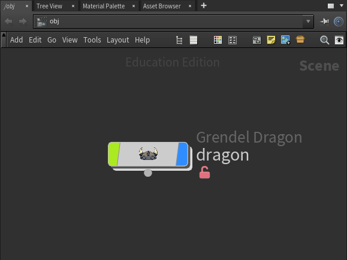

How to Use the BYU Pipeline Tools
Hello friend,
You are here because you have decided to embark on an epic journey to complete a short film.
Look around you. You are in the midst of the most brilliant creative minds in the history of the world. Look at yourself. You are one of those creative minds. Now all you need is a set of tools to help unlock your creative prowess and work in harmony with the titans around you.
My friend, if you seek those sacred tools then you have come the right place. These are the BYU Pipeline tools. These tools will help you unlock the mysteries of teamwork and harmony. And this documentation will be your guide to learning the full potential of these tools and thus uncover the full potential of you!
Read on and you will master your fate and take control of your destiny!
Best of Luck,
Pipeline Management
Pipeline Management
Table of Contents
Introduction
- Basic Overview
Reference
- Production Sheet
- Advanced
- Glossary
Basic Overview
The pipeline tools are here to help you focus more on the art and less on the saving-the-files-into-the-right-place. It also provides some handy tools to make your life a little easier.
Preface
The very first thing you need to understand about pipelines is that it acts like a library. You go to the library, find the book you want, check it out, read it, then return it to the library. The pipeline works the same way: you go to the pipe, check out the scene you want, change it, then return it to the pipeline. That way, people can keep checking out the most updated scene and not do work over again that has already been done.
One important difference between the pipeline and a library is that multiple people can check out the same item. This is so that when Mike is working on something Brennan can still check it out and do tests on it or show it off to someone instead of Mike having a monopoly on the model.
Every time you see the word Grendel you can replace it with the name of your film, Every time you see the word Grendaya, Grendini, etc, replace it with "TheNameOfYourFilmaya, TheNameOfYourFilmini etc. But for the sake of brevity (and for the sake of our ego) we will just use Grendel, Grendaya, Grendini etc.
For fun and to help distinguish between the regular Maya and the Maya that has all of the BYU pipeline tools loaded in we have renamed it and all the other software you will be using. Maya become Grendaya, Houdini become Grendini etc.
From what I understand "the pipeline" technically refers to the process by which the film is created from concept to storyboarding to animation to editing to the end. The "pipeline tools" only touch a small section of all of the work that goes into the pipeline. However in this document you may see "pipeline" and "pipeline tools" used interchangeably. In this case they both typically refer to the "pipeline tools." Just be aware of that as we move forward and you should be able to distinguish the when pipeline refers to pipeline and when it refers to pipeline tools.
Getting Access to the Pipeline Tools
In order to have access to the pipeline you need to be a member of "the group". Talk to Seth and he will be able to add you.
Once you are part of the group open up a file explorer and navigate to /groups/FILM/byu-pipeline-tools/. FILM will be the name of the group (ie grendel, dusk, etc). This directory is where all of the tools are located.
There will be a number of icons, most of which will be some humorous combination of the film name and the software. These icons will launch the software and load all of our custom tools.

To add these icons to your desktop:
- Right click on the icon
- Click 'Make Link'
- Right click on the link that was just created
- Click 'Move to' -> 'Desktop'
Hopefully that is the last time you will have to go into that folder. Should you find yourself interested in what else is there you can learn more in the advanced section.
Important Terms
The pipeline handles two different types of bodies: Assets and Shots.
Assets are either props or characters. Assets are composed of various elements: models, rigs, textures, designs, materials, and assemblies.
A common misconception is that an asset is the same as a model, however the appropriate relationship (at least as the pipeline tools see it) is to say that an asset has a model, it is a subtle difference that is hard to enforse as we speak and probably is not worth enforsing since to make things more difficult the word asset is a very handy word to refer to a useful or valuable thing. So everything is that is useful or valuable is also an asset. So just keep that in mind as you reading through all of this.
Shots are...well shots I guess. The elements that make a shot are animations, character effects, compositions, effects, layouts, lighting, and renders.
To better understand how the pipeline works you first should understand the life of these bodies. And to understand the life of a body you need to understand these terms:
Body Creation
In order to do anything you need to create a body. Assets are usually the first bodies to be created and then shots will be made from assets. When you create an asset you will give it a name and the pipeline tools will construct a bunch of folders to store the various elements of the asset. These folders start out empty so we need to fill them with the asset elements. In order to do that we need to publish the asset.

Publishing
First up is to make a part of the assets: the model. Once you have created the model you will need to save it into the pipeline. This is called publishing. When an asset is published, the pipeline tools will make a copy of your file and save it into the pipeline. In the case of the model, the pipeline will take your Maya file and make a copy of it to store in the model folder. Once you have published an asset it will be available for anyone to see and use. The way to access a file that someone else has published is through checking out the assets.

When you publish an asset make sure that you leave a good comment about the changes that you made. This makes it easy to track important changes on the asset and will become crucial if ever you need to rollback (discussed later).
Checkout
To use an asset you need to check it out. Checking out is the opposite of publishing. When you check out an asset the pipeline tools will create a copy of the production asset and save it to your personal files so that you can work on it. You can make what ever changes you need to it and when you are done you publish the asset again so that everyone can have access to your changes.

Since the pipeline tools make a personal copy of the file for you, you can modify and save changes as you wish without worrying about changing the production version until you are ready to publish.
Multiple people can check out the same asset and work on it at the same time. This is nice because it means that multiple people can look at, or do tests on or work on the the same file. However you need to watch out. Imagine a case where two people, Austin and Kalee, both are working on the model for Grendel. Austin is hard at work modeling Grendel's arms; it has taken him hours. Kalee has checked out Grendel's model as well to check on it's progress. Since Austin hasn't published his changes yet Kalee has an old version. She notices that Grendel's eyes are backwards and in a couple of seconds she fixes them. Austin finishes his changes and publish. Moments later Kalee publishes her changes, but her version doesn't include Austin's changes. There is no way to merge the changes, so the pipeline will use the model that was published most recently, in this case Kalee's version that has the eyes the right way but has the wrong arms. So make sure that you are communicating will all the people that are working on your asset.
Now in the case of Austin and Kalee it is likely that they would actually want to use Austin's version and just apply Kalee's quick changes to it. Thankfully there is a way to revert a production model to a previous version, rollback!
Rollback
When you publish an asset the pipeline will keep track of the history of that item. So at anytime if you need to revert to a previous version of the asset you can rollback the changes.

In the case of Kalee and Austin (discussed in the Checkout section), we see that Austin needs to restore his version. He would scroll through the revision history and find his version. If he doesn't remember the exact time of his publish he can look in the comment section for the descriptive comment that he wrote when he published it. Then he can rollback to his version, re-do Kalee's changes and republish.
The Life of a Pipeline Asset
Now let's see these in context of the life of an asset
- Story artists take the story concept and draw each acting moment and scene in the film.
- Vis Dev artists develop the look of objects and characters that are needed to help tell the story told by the story artists.
- I have not idea what happens in previs or how it gets into the pipeline
- Create asset
- Make and publish a model for the asset in Maya
- Make and publish a rig for the asset in Maya
- Create a shot
- Reference the model and rig into the shot, make an animation in Maya, and publish it to the shot
- Create textures for the the asset in Mari
- Assemble the asset in Houdini using the models and textures created earlier and publish it to the asset.
- Check out the shot in Houdini
- Bring in all of the various props for the shot in Houdini, add lights and then publish it to the shot
- Render the scene in Houdini
- Bring renders from Houdini into Nuke, and publish the composition to the shot
- Hand the composites off to the editor
- Wait for the awesome movie to come together
That is the general overview of the pipeline and what it is doing. Now we will move on to the different tools in the various softwares.
Maya
For our production, we use Maya for modeling, rigging, and animating. These tools are made to help with those tasks.
To access the pipeline, open up Grendaya and look at the row of tabs at the very top. Click the tool shelf tab on the furthest right labeled "Grendel".

 Checkout
Checkout
The checkout button is exactly what it sounds like: you use it to check out, or access, previously worked on scenes or models. When you click it, a window will come up and you will notice that there are 5 tabs: model, rig, layout, anim, and cfx.
If you are a modeler, you'll find the model you want to check out; if you're an animator, you'll find the scene you need to check out; If you're a CFX (character FX) artist you'll need to check out the animated scene, etc.
In the list of assets or shots select the body you want to work on. Notice the box to the right of the list. This box will give you information about the current state of the body: who was the last person to work on it, when was the last time the body was changed, and what things were changed. If everything looks in order, click "Check Out" and Maya will load the file and you will be able to work on it.
However if you notice that Eric has been working on Beowulf constantly for several days and the last publish was a week ago it may be that Eric is still working on some changes and has not published them yet. Make sure you communicate with those that are working on the same body as you so that you can avoid duplicating work. Our checkout-publish system allows multiple people to check out an asset or shot at the same time so that none of the bodies are locked down. However with this power comes great responsibility! Make sure you are a good communicator!
Another possibility is that you see "No publishes for this element." That means there is nothing for you to check out. First you must model the asset or create a rig or setup the shot locally and then publish it to the pipeline.
 Create Body
Create Body
As discussed in the basic overview section, creating a body will add a new asset or shot to the project. After the body is created you will then be able to publish and check out it's various parts. When you click this button, a window will come up that has two tabs, "Asset" and "Shot". If you are making a new asset, you will name it under the asset tab; if you are making a new shot, you will name it under the shot tab. Following proper naming conventions (that have been established by those in charge of the film), type in the name of the asset or shot and then click "Ok." The body is now added to the project and is ready to receive its first publish!
 Publish
Publish
The publish button will allow you to upload your model or scene's progress to the pipeline so that others can access it. After checking out a model or scene, you can modify it then publish it back out. Once your asset is published, you should be able to check it out any time you or someone else needs it. Your publishes will replace the previous publishes but it will not overwrite them. This allows you return to a previous version with a rollback (see further down below).
Your First Publish
A little information on how the pipeline works (If this is intimidating move on to the next paragraph which contains the instructions you need). In order to publish your work the pipeline tools copy your file and adds it to the appropriate production folder. Before doing so it moves the old version into a backup location so it can be restored in the event that you need to rollback. As a result, in order to copy your file, there needs to be a file to copy. So if you have not ever saved the file you are working on then there is no file to be copied, when the pipeline tried to copy the nonexistent file Maya will crash and you will loose all of your work. This shouldn't be a problem because you are wise artist who always frequently saves your work because you understand how volatile modeling softwares are to begin with and then to top it off with having that software run additional software (the pipeline tools) that was written by students who still don't know what they are doing, you are of course very reluctant to trust the software and you save your work every couple of minutes. So I'm sure you won't even run into this problem ever. But just in case...
Make sure that you save the file the first at least once before you try to publish for the first time! It's a good practice anyways and in this case it is essential to making this process work! But I guess if you don't follow these instructions the worst case scenario is that Maya crashes, you lose all of you work, and you (hopefully at this point) learn the hard way that you should frequently save your work, especially before entrusting it to a bit of code written by students!
For future publishes you shouldn't have to save before you publish (the pipeline tools will do that for you, they just need a file to work with, which they have now that it has been published at least once). However, I would remind you about the foolishness of putting too much trust in imperfect software (Note: All software is imperfect!) and I would save your work all the time. Even though it is not technically required at this point you should be doing it frequently anyways!
Bottom line: On your first publish, you must save your file locally beforehand or it will not upload correctly.
 Set Current Frame Range
Set Current Frame Range
Theoretically, this would read into the Asset Browser app thing that we have and make it easier for you to make the correct frame range on any given animated shot. However, we aren't using the Asset Browser anymore, and this button essentially does nothing. So don't click it.
 Playblast this Shot
Playblast this Shot
A playblast is essentially making a really low-res, non-shaded render that takes seconds instead of hours. Use this to playback your animation in real time, as playing your animation in the viewport (even in the real-time setting) can be inaccurate.
 Export as Alembic
Export as Alembic
An alembic is essentially an .obj file for animated objects. It will export your animation into a format that other packages like Houdini can read. Uploading an alembic to the pipe is a way to backup your file and keep the animation safe even if your animation file explodes, but keep in mind that uploading alembics constantly will slow down the pipe for everyone if it becomes too full of files. We recommend that you export your alembic to the pipe either when you are finished with your animation or reach a major checkpoint. (You may export your animation as an alembic to your local drive (using Maya's built in exporter) as often as you want though.)
 Tag Selected Objects for Export
Tag Selected Objects for Export
When you are animating a scene, you will probably have your character(s) walking through a set or environment that you aren't necessarily animating. When you tag objects for export, you are telling the computer which objects you DID animate so it knows which ones to export as an alembic. You only have to do this once per scene. To do this, select all your animated objects then click the button. Be sure to only select objects that you've animated (including characters, props, and moving objects).
 Untag Selected Objects for Export
Untag Selected Objects for Export
If you want to change which objects are exporting as an alembic, you can select the objects you want to exclude and click this button. You only have to do this once. And since objects are untagged by default, you should only have to do it to objects that have been tagged previously.
 Reference a Model or Rig
Reference a Model or Rig

A reference is like importing a model or rig into your scene except it pulls from another location and updates as the owner of that file updates it. This is especially important for character rigs as the riggers will continue to polish deformations and your referenced rig will update with those changes. You will need to re-reference your rig(s) every time a change is made to the rig in order to see it in your animation; this will not affect your keyframes. Other notes: You cannot modify a model or rig when it is referenced. Referenced rigs are generally faster and less expensive to run than the real rig itself.
 Inspirational Quote of the Day (AKA the Brent Button)
Inspirational Quote of the Day (AKA the Brent Button)
Click to be inspired by your favorite faculty's inspirational quotes. Also submit more quotes to the tool_suggestions channel on Slack.
 Gnomic Test Geo (AKA Summon the Garden Gnome button)
Gnomic Test Geo (AKA Summon the Garden Gnome button)

Need to blow something up or set it on fire? Have we got the gnome for you! This is kind of like Myth Buster's "Buster" test dummy except a garden gnome and also virtual. Have fun, go play with scissors and fire on us.
 Rollback Body to Previous Version
Rollback Body to Previous Version
Occasionally, you might publish a scene or model that for some reason you wish you didn't because the last version was better. Or maybe the current published version has crashed and there's no saving it, so the best bet is to go back in time and reverse the damage.
That's what rollback is for! Rollback will take you back to a previous version. To use it, click the element you want to rollback to and click the date of the version you want.
To rollback an element first check it out. Then click the rollback button. A window will come up that will list all of the previous publishes for that element. Click on the publish that you want to go back to and click "Rollback." Maya will essentially recall the file from that past publish and republish it so it becomes the current publish (Note: In the list of publishes this publish will now occur twice, once when it was originally published and again when it was rolled back). It will load publish into Maya and you can then start working on it.
Houdini
For our production, we use Houdini for shading, lighting, rendering, and most of the FX.
Do you remember all of those neat things you learned back in the Maya section? Well, throw them out. They only partially relate to the Houdini pipeline tools and having them tightly coupled in your mind will lead to errors.
Let's take a look at Houdini
Go ahead and open the film version of Houdini. Now at this point Houdini probably didn't load in the shelf like Maya did. To get there you will need to add it.

With the tools shelf added in, let's take a look at all of the tools.

Create Body
The create body tool here is actually the exact same as the one in Maya, so about forgetting everything what I mean is don't forget this one.
Assemble Asset
To understand how the checkout and publish buttons are different we first need to understand how the assemble asset tool works.
In Houdini the method of adding geometry to a scene is typically by using the tab menu in the Network View. In order to add our geometry to Houdini we first need to make digital assets for them. Once we have we will be able to simply tab in all of our assets into Houdini. The assemble asset tool creates the digital assets for you.
When you click assemble asset you will be greeted with a window that looks remarkably similar to the checkout window. Don't let it fool you! This is not how you will check out assets in Houdini ever!

Find the asset that you want to turn into a digital asset* and then click "Check Out."" This will load in all of the alembics that maya has exported when you published it there, and create out of them a digital asset. Once the digital asset is created you can add the shaders for the various objects into the digital asset. Once you are pleased with your work, select the digital asset, and then click publish. Now the digital asset is ready for anybody to tab into their scene
*Note: it is likely that the assemble asset window will tell you that there are "no publishes for this element". That is good. That means that nobody has assembled the asset yet. If there is a previous publish that means that the asset has already been assembled and you should be able to tab it into the network view without assembling it again.
Once the asset is assembled you no longer need to assemble it. You can just tab it in. If you click assemble asset again it will bring in all of the alembics from maya again but it won't bring in any of the shaders that you created.
Review
- Click assemble asset
- Click on the asset you wish to assemble
- Click "Check Out", which should lead you to here: 
-
Add shaders and perform whatever other edits

- Select the digital asset in the network view
- Click publish
If you need to make changes to the asset the instructions are a little different:
- Tab in the asset
- Select it in the network view
- Make the necessary changes
- Select the digital asset in the network view
- Click publish
Checkout
Checkout is a little tricky in Houdini. If nothing is selected in the network view when you click "Check Out" it will think you are trying to check out at shot to work on lighting or fx.

If you have an asset selected in the network view then it will think that you are trying to check out that asset. And all you will get is this notification that you did it successfully. If you have something selected that is not an asset then nothing will happen.

Reference
There isn't a reference tool per se but since we are using HDAs you can tab in any asset into Houdini. These act as references that will get updated anytime that the HDA get's updated, But you can also then check out the asset after you have tabbed it in, and then it is no longer a reference but a checked out asset.
Rollback
Rollback works in Houdini similarly to Checkout. If you have an HDA selected then it will allow you to rollback that digital asset. If you have a shot checked out then you will be able to rollback that shot.
Publish
Publish is like Checkout and Rollback. If you have and HDA selected it will publish the HDA. If you don't have anything selected then it will publish a shot. (Note: you can only publish an HDA if you first checked it out.)
Inspire
See also Maya Inspire tool. It's the exact same.
Gnome
This is essentially the same as the Maya Gnomic Test Geo tool but in Houdini it also will load in the gnome's textures!
Mari
For our production, we use Mari for painting textures.
The Mari tools are still in development. For the time being save your textures into /groups/grendel/production_textures/ when they are ready to go.
Nuke
For our production, we use Nuke for compositing.
The pipeline tools for Nuke are located in the sidebar

Checkout
Nothing weird here! It's just a pretty straight forward checkout process!
Publish
Nothing weird here! It's just a pretty straight forward publish process!
The Future
There are many tools that could be made for Nuke but haven't been made or even dreamed of. If you have a vision for an awesome tool for Nuke, let us know if the tools-suggestions channel on slack!
Slack
For our production, we use Slack for communication.
In Slack you can find important links in the important links channel
Each department has their own channel where you can collaborate on the current projects, show of your progress, and ask questions.
Also check out the blog for more information.
Production Sheet
This Google sheet keeps track of the progress on each asset and shot. It keeps track of who is working on what and helps us see what needs the most work.
Advanced
With any luck at all you won't need this but if you are curious here is some more information about the insides of the pipeline. For even more information look at our git repository or talk to you local pipeline technician.
Switching definitions for Houdini Digital Assets
Have you noticed that for some reason when you tab in an HDA that it isn't the same as when someone else tabs it in? Are you particularly frustrated because it's an asset that you assembled? Houdini may have switched HDA definitions on you! Don't worry it's super easy to fix.
- Tab in the asset in question
- Right click on the asset
-
Select "Type Properties"
A little window with a ton of different options and setting should appear
- Find a drop down menu labeled "Switch definition"
-
Click it to reveal a couple different paths to a couple different definitions of the HDA.
Likely the one that is selected will be something along the lines of "/groups/grendel/users/USERNAME/ASSET_NAME/ASSET_NAME.hdac"
- Select the option that is "groups/grendel/production/assets/ASSET_NAME/assembly/main/ASSET_NAME.hdac" to switch to the production definition of the digital asset
- Click Save
Where Do File Go When I Check Them Out
When you check out a file the pipeline tools make a copy of the production file for you to work on. This file is yours and you can edit it as you wish without worrying about messing up the production assets.

Glossary
- Animation
- Assets
- Body: bodies are just a shorter way to refer to both assets and shots. A shot is a body but not all bodies are shots; same for assets. You probably won't here about them outside of this documentation.
- Character Effects (CFX)
- Composition (comp)
- Designs
- Effects (FX)
- Element: elements are the building blocks of bodies.
- Element Browser: a piece of software used to keep track of shots and assets. It never really got off the ground and typically we use a Google Sheet to keep track of the progress of all the production bodies.
- Houdini Digital Asset (HDA)
- Layouts
- Lighting
- Materials
- Models
- Renders
- Rigs
- Shots
- Textures
- Visual Development (Vis Dev)